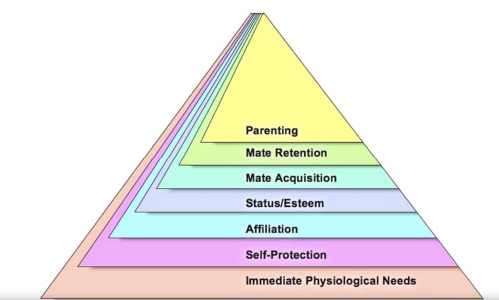
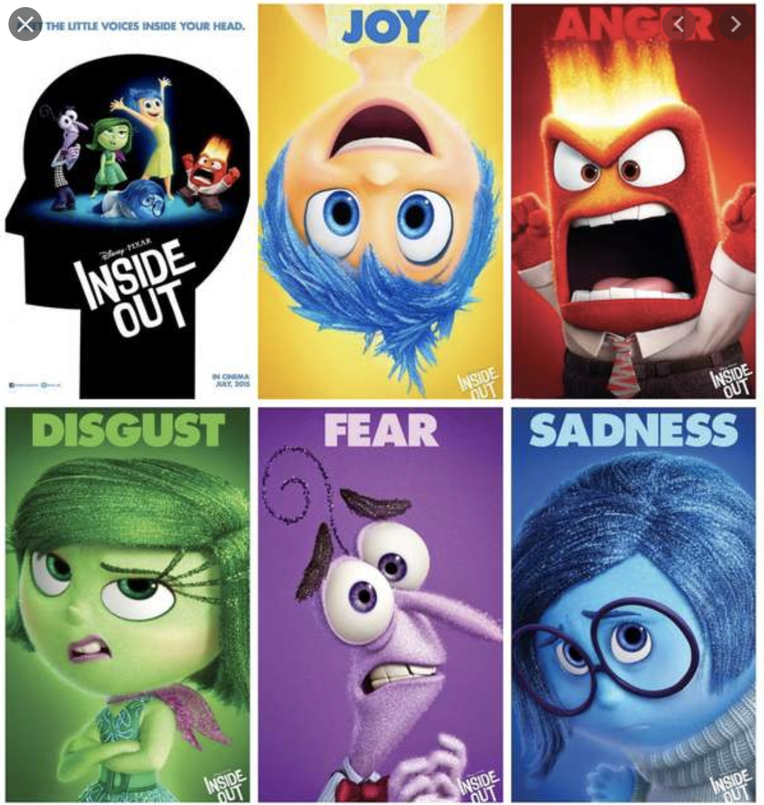

[科學] 學佛是真的 | Through Psychology Explain Buddhism
今天的分享來自<得到 App> 萬維鋼 | 精英日課 ，透過進化心理學列出七大模塊，事實是他們輪流坐莊來決定當下我的個體，再進一步解釋，其實”我”的本體，不屬於任何一個情感模塊。
▌進化心理學
▌實驗一
心理學有個動詞叫“prime”，也就是用一些外部的暗示去影響一個人的決策。比如說：給男性受試者看美女圖，會開啟了他大腦中的“求偶模塊。在漫長的人類歷史中，男性想要獲得配偶，就得拿出資源來。求偶模塊在我們大腦中根深蒂固，一旦這個模塊出來做主，它就要求趕緊得到資源。
▌實驗二
還有一個更有意思的實驗，也是針對男性
實驗把受試者分為兩組分別看電影。第一組看恐怖片，第二組看的是浪漫愛情喜劇。看完電影之後，又給受試者們看兩個藝術博物館的廣告。
- 廣告一：宣傳點是這個藝術博物館為普羅大眾都喜好的展覽
- 廣告二：宣傳點則是這個博物館非等閒之輩來欣賞，你來就能彰顯你與眾不同的品位
那麼，剛才看的電影，對現在你對博物館的選擇有什麼影響嗎？
結果是，一開始看恐怖片的人更容易受到第一條廣告的影響，他們更願意去一個去的人多的博物館。而看浪漫片的人更容易受到第二條廣告的影響，他們想去一個人少的博物館。
這是因為恐怖片和浪漫片開啟了你大腦中不同的模塊。恐怖片開啟的模塊叫“自我保護”，它想讓你和其他人在一起抱團取暖，所以你就要去到人多的地方。浪漫片則開啟的是前面說的 “求偶模塊”，它會讓你更願意找一個私密的地
▌七個思想模塊
那麼在腦中到底有多少模塊呢？
進化心理學家<Douglas T. Kenrick/ Vladas Griskevicius>，寫了一本書《理性動物》
共提供了七個思想模塊
- 自我保護：讓你和其他人在一起抱團取暖，避免一個人獨處
- 求偶模塊：積極尋找資源展開行動
- 保住配偶：也就是防止配偶跟別人跑了, 這個模塊一旦開啟，人的注意力就不是在異性上，而是在潛在的同性競爭對手上
了 - 群體認同感：希望加入組織,獲得社交和團隊合作
- 關愛親屬：保護自己的孩子和父母、兄弟
- 社會地位：一種自我屬為社會認同
- 避免疾病：我們看到不乾淨的東西會感到噁心，且喜歡舒適的環境

Renovating the Pyramid of Needs: Contemporary Extensions Built Upon Ancient Foundations
現今的 “模塊說” 基本上是學界的一個共識，它是主流的學說之一。這些模塊是在長期進化過程中，我們大腦中一直存在的。只要人一出生，大腦就已經“預裝”了這些模塊。即使一個沒有受過任何教育的人，見到美麗異性也想追求、看到髒亂差環境也會反感。
但是請注意，模塊只是邏輯分類，並不是說大腦中有哪個區域負責哪個模塊。這些模塊之間也並不存在明顯的分界線，不像你手機裡的 APP 一樣，想用哪個程式就把它調出來，不用時就關閉這個再打開另一個。
模塊之間有互相影響，而且無縫切換
常常一個模塊還沒結束,，另一個模塊就已經啟動了。
而我們大腦的決策權(心智)，基本上就被這些模塊輪流主導，也是腦中主要胡思亂想的來源
▌自由意志在哪裡?
人腦不是君主制，而是一個“多元政體”。意思就是每個模塊都可以暫時接管你的大腦，輪流坐莊，各個模塊之間是存有互相競爭的關係。這種模型是近年以來心理學家對大腦最新的一個理解。其實這個道理就像是，人的腦中並不是只有一種聲音，人腦內其實有時常有爭論。著名迪事尼的卡通《腦筋急轉彎》，其實說的就是這個模型，說不定原著也是先了解進化心理學，再創作此作品呢

▌佛：五蘊皆空、無我
《未來簡史》書中也有提到這個道理。如果是各個模塊輪流坐莊。
那麼第一，你沒有單一的“自我”；第二，你沒有“自由意志”。你的行動只是被這些模塊推來推去而 已。常常是某個模塊已經控制你了、已經讓你「做好決定了，事後，你才“意識到”你做出了這個決定，然後你的敘事自我還要給這個決定編個理由。
模塊佔據你大腦的方法，是感情。
每個模塊都向你輸出一個感情，哪個感情強，哪個就容易抓住你的注意力。
這就好比你身處一大幫朋友和同事之間，他們每個人都在跟你說話，且都想讓你照他們說的話做，其中誰說話的聲音大，誰就更能吸引到你的注意力，此時你就容易聽誰的。
如果你有打坐冥想的經驗，不但感情是這樣，思想也是這樣。比如你現在想要把注意力都集中在你的呼吸上，只體會自己的一呼一吸。你就會發現，你根本沒辦法長時間地集中注意力，很多想法就會不斷地冒出來一這些想法，也是從各個模塊中冒出來。
每次激起的模塊還根本不靠譜，而你常常被“他們”迷惑，影響思想和行為，但他們不是“你”，這正是佛陀說的“五蘊皆空”和 “無我”。
看到這裡，你聽懂了嗎？因為沒有任何一個模塊是真正的自已
▌修行，戰勝模塊(情感)
但是佛陀，可不是這麼絕望的。佛陀說你可以通過修行，戰勝那些模塊，找回掌握控制權，擁有自由意志(尋找清淨)。
萬老師的比喻很妙：「這就好像一屋子的人都在讓你幹這幹那，而你非常酷，直接忽視大部分人的聲音， 自己選擇了對你最有利的意見——哪怕他的聲音很微弱」。
▌結論
很多時候常思考，我為什麼是我？至今30多歲，那個歲數的我，比較能代表真正的我？如果你曾思考過類似問題，不妨接受這個心理學推論，你本來就沒有屬於任於一個模塊。如果人沒有恆定的自我，你在不同時刻， 其實是被不同的思維模塊所左右而已。佛陀認為，你可以通過修行，戰勝那 些思維模塊，掌握控制權，擁有自由意志，這邊談到的自由意思，其實是空、是無我、是本來沒有我，正是六祖禪師說的：「本來無一物，何處惹塵埃」。
謝謝你的閱讀！我是黃大仙。
都市修行人 / 雲端架構師 / GCP講師 / 新手爸爸
喜歡研究不同領域事物，誠摯邀請一同交流學習！📒
如果有任何疑問，歡迎留下 Private Note 或留言給我！📒
👏1下——–給我一點鼓勵。
👏2~10下—–文章對你有幫助。
👏50下——-有興趣看「閱讀分享」相關的分享。
謝謝你的閱讀！我是黃大仙。
都市修行人 / 雲端架構師 / GCP講師 / 新手爸爸
喜歡研究不同領域事物，誠摯邀請一同交流學習！📒
如果有任何疑問，歡迎留下 Private Note 或留言給我！📒
👏1下——–給我一點鼓勵。
👏2~10下—–文章對你有幫助。
👏50下——-有興趣看「閱讀分享」相關的分享。